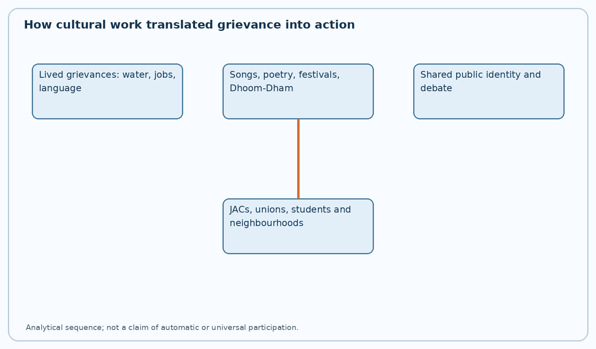
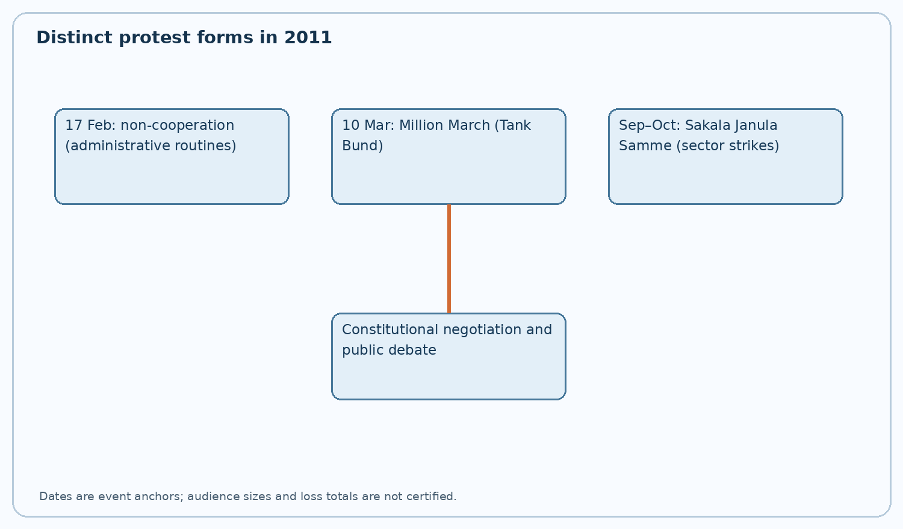
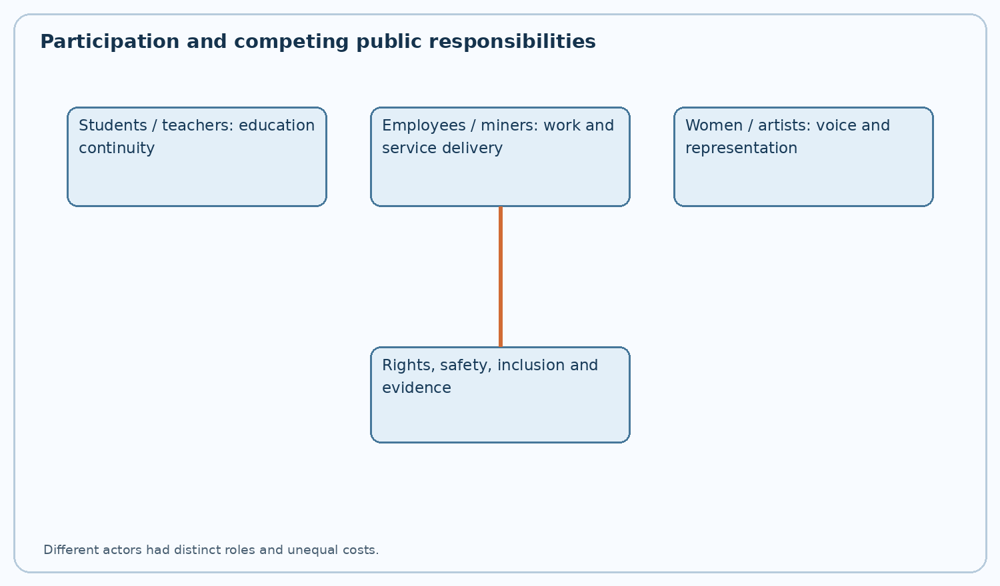

TGPSC Group I Mains | Original English study draft | 25 October 2026 | Independent academic review pending
Syllabus authentication: Exact clause inspected in the original commission-hosted Notification 02/2024 dated 19 February 2024. All questions below are original practice, not labelled official PYQs.
Cultural Revivalism in Telangana, other symbolic expressions in Telangana Movement- Literary forms- performing arts and other cultural expressions- writers, poets, singers, intellectuals, Artists, Journalists, Students, Employees, Advocates, Doctors, NRIs, women, Civil society groups, organised and unorganised sectors, castes, communities and other social groups in transforming the agitation into a mass movement - Intensification of Movement, Forms of Protest and Major events: Sakalajanula Samme, Non-Cooperation Movement; Million March, etc.,
| Official component | Coverage | Core distinction |
|---|---|---|
| Cultural revivalism, symbolism, literature and performing arts | Sections 1–14 | Origins, dialect, song, festivals, film and media |
| Writers, poets, singers, artists, journalists | Sections 4–14 | Creators, media and public meaning |
| Students, employees, advocates, doctors, NRIs and women | Sections 15–23 | Sector-specific participation and ethical tensions |
| Organised/unorganised sectors, castes, communities | Sections 21–25 | Inclusion and differentiated costs |
| Non-cooperation, Million March, Sakala Janula Samme | Sections 26–31 | Chronology, tactics and consequences |
| Other protests and constitutional limits | Sections 29–34 | Rights, disruption and parliamentary process |
Telangana's cultural assertion and the 2011 protest repertoire were mutually reinforcing but distinct: symbols helped explain and legitimate the claim, while associations and occupational groups supplied coordination. Both operated within a contested democratic setting; only constitutional law completed state formation.



The demand for Telangana statehood did not become a mass movement merely because parties contested elections. Cultural workers translated arguments about irrigation, employment and political representation into experiences recognisable in villages, bastis, hostels and urban workplaces. A folk song about an empty tank could communicate the human cost of irrigation policy more immediately than a budget table; a Bathukamma gathering could claim public space without resembling a conventional party meeting. This translation was politically powerful but never a substitute for documentary proof of discrimination. Culture created shared language, memory and confidence; organisations supplied the logistical capacity to act on that confidence. The historical problem is therefore not whether culture or politics was primary, but how artistic repertoires, associational networks and constitutional negotiations interacted. A rigorous account must also ask whose voices were heard, who paid the costs of strikes and whether an apparently common regional identity obscured caste, class, gender and religious differences.
Telangana cultural assertion drew on memories older than the final statehood phase. The Telangana armed struggle, library movement, regional literary debate, 1969 Jai Telangana agitation and anti-feudal songs furnished symbols that later activists reinterpreted. Kaloji Narayana Rao's poetry and the writings of regional intellectuals encouraged attention to everyday speech and social injustice. The point is continuity of a repertoire, not an uninterrupted single organisation: movements of different periods had different leaders, ideologies and constitutional goals. A 1940s peasant song about landlord domination and a 2011 song about regional allocation might use similar idioms but should not be treated as identical demands. Historians reconstruct these connections from dated publications, recordings, performance notices and oral histories. When an anniversary account attributes every earlier cultural work to the 2009 movement, it risks retrospectively appropriating independent artistic traditions. Students should identify the older context and explain the specific transformation in the later mobilisation.
The everyday Telugu spoken across Telangana includes varied local forms shaped by Urdu, Marathi, Kannada, tribal languages and district histories. Activists criticised portrayals in which coastal-standard Telugu signified education and authority while Telangana accents were used mainly for comic, rustic or subordinate characters. Dialect-based stigma can affect confidence in schools, employment interviews and media representation even where no formal law discriminates. Cultural revivalism insisted that local speech could carry poetry, scholarship, administration and public argument. It did not mean that Telangana possessed one uniform dialect or that other Telugu varieties were illegitimate. A fair policy implication is linguistic dignity in classrooms, public broadcasting and cultural archives without policing people's speech. To assess a specific media allegation, examine a representative sample of programmes, character roles and production periods rather than treating a few memorable examples as a statistical finding.
Poetry pamphlets, literary meetings, small magazines and writers' associations circulated interpretations of regional deprivation outside legislative forums. Writers could connect a farmer's debt to the institutional geography of irrigation, or a graduate's unemployment to recruitment safeguards, while preserving individual emotion. A public reading at a college or district town also made discussion possible for audiences excluded from elite policy meetings. Literary expression did not follow a single ideological line: some writers emphasised regional dignity, others caste hierarchy, class struggle, linguistic pluralism or constitutional federalism. Their debates are part of the evidence, not an embarrassment to be edited out. When studying a poet, distinguish the date of composition, the first recorded performance and later popularity; a song widely used in 2011 may have been written decades earlier. Mains answers gain depth by showing literature as both an archive of grievance and a forum for disagreement.
Gaddar, the widely known balladeer, brought a recognisable idiom of collective singing, call-and-response and social protest into Telangana public culture. His earlier association with revolutionary cultural politics complicates attempts to present him as a simple representative of one party or one ideology. His performances could attract audiences beyond those who would read an electoral manifesto, while raising questions about caste inequality, land and dignity alongside statehood. Analysts should distinguish support for Telangana's political formation from endorsement of every method used by organisations with which an artist was associated. The performer was one participant in a large ecosystem that included women singers, district troupes and local writers who rarely received comparable publicity. Historical evaluation requires dated interviews, performance records and independent reporting; broad claims that a single singer 'created' the mass movement erase collective organising and the contribution of local cultural labour.
Goreti Venkanna's public reputation is associated with songs of village life, environmental loss and agrarian change; Guda Anjaiah's socially charged compositions drew attention to ownership, labour and unequal power. Their significance lies not only in catchy refrains but in how the narrative speaker positions the village, the worker and the ruling elite. In a region where tank deterioration and migration were contested development questions, such compositions made the social consequences of policy intelligible. Songs are not audited irrigation data, however: their evidentiary value concerns lived perception, imagery and mobilisation. A good comparison identifies different emotional registers—lament, satire, defiance and solidarity—and asks what audience response each sought. It should also avoid attributing every popular lyric to the best-known performer; authorship, composer, singer and later recording can be different people. Copyright and oral attribution demand care in study material.
Ande Sri's 'Jaya Jaya He Telangana' became an important emblem of regional belonging, later receiving formal state-anthem recognition after state formation. Its place in the movement demonstrates how a song can move from informal public performance into official civic symbolism. The transition raises a useful distinction: a protest song can be inclusive because many groups sing it, but official adoption involves a separate state decision and date. Students should avoid projecting post-2014 government recognition backwards into the pre-statehood period. Lyrics that refer to rivers, soil and communities operate as a compressed political geography rather than a literal inventory of development indicators. An answer can explain the song's role without reproducing copyrighted verses. Critical questions remain: which communities appear in the dominant regional image, and how can a state anthem celebrate common belonging without suppressing internal diversity?
Telangana Dhoom-Dham brought singers, percussion, satire, speeches and local dance into a portable format associated with Rasamayi Balakishan and fellow cultural organisers. Reports describe early performances beginning in Kamareddy in 2002, but precise founding claims should be tied to contemporaneous notices rather than later celebratory narratives. A performance could begin as entertainment, proceed through memories of village life and end with a direct discussion of statehood. This format lowered the cost of political education: it required neither a large hall nor specialist literacy. Its participatory style also allowed local artists to insert village-specific concerns, making the movement more than a centralised party broadcast. Yet audience size and the number of shows are often repeated without original attendance records. Explain the organisational mechanism—repeated contact, shared repertoire, local hosts, travel and public discussion—rather than inflating figures. Dhoom-Dham illustrates cultural infrastructure, not merely a decorative opening to political rallies.
Oral performance forms such as Oggu Katha and Burrakatha can combine story, dialogue, rhythm and moral interpretation. Movement performers adapted familiar structures to explain public questions: a dialogue might contrast a promise of local employment with a worker's experience of recruitment, or juxtapose an official irrigation announcement with a dry village tank. Their pedagogical advantage is that listeners can question and remember characters, rather than memorise administrative jargon. These forms have their own caste-community histories and religious or occupational contexts; they did not originate with the statehood movement. Presenting them as newly invented political instruments would erase the artists and communities who sustained them. A sensitive account credits tradition-bearers, notes variations in form and distinguishes a traditional performance from a newly written political adaptation. Oral history should be cross-checked for performer, location and date when used as evidence for a specific event.
Bathukamma and Bonalu were important symbols of Telangana's regional cultural visibility, but they are distinct festivals with different ritual histories. During the movement, public celebration could assert the legitimacy of practices that participants believed had been marginalised in dominant cultural narratives. Women's participation in Bathukamma gatherings made cultural mobilisation visible beyond male-led street demonstrations. It is inaccurate to claim every festival participant supported statehood or that the festivals belonged exclusively to one political camp. Nor should a cultural symbol be used to flatten the religious diversity of Telangana. The analytical question is how festivals acquired an additional political meaning when staged in rallies, universities or metropolitan spaces. Their significance included dignity, intergenerational memory, women's organisation and the right to represent regional culture in public institutions; none of these alone proves a legal claim for state reorganisation.
Maps of the ten pre-2014 Telangana districts, regional flags, portraits, scarves, traditional dress and commemorative gatherings helped participants recognise a shared cause. A map is a powerful device because it turns an abstract grievance into a territorial claim; it also creates a risk of treating administrative boundaries as culturally homogeneous. The gongadi woollen blanket and other rural visual references invoked pastoral labour and local identity, but no single costume could represent every occupation or community. Memorialisation created sites for mourning and collective political commitment; it must not be confused with reliable casualty accounting. A historical analysis asks who designed the symbol, where it appeared, how meanings changed and who felt excluded. The constitutional decision on boundaries remained a parliamentary matter, whatever the intensity of symbolic identification. Symbols organised public attention; they did not themselves create a state.
Films and documentary recordings brought movement narratives into cinemas, television and mobile circulation. The 2011 feature 'Jai Bolo Telangana', directed by N. Shankar, is an example of popular cinema responding to the agitation; it should be analysed as a constructed narrative, not treated as a documentary record of every scene. Film can combine personal sacrifice, family conflict and public protest in ways that invite emotional identification. Editorial selection, funding, censorship concerns and distribution shape whose experiences become visible. Compare filmic representations with contemporary newspaper reports and institutional records before relying on a particular claim. Students should also note the tension between commercial film markets and regional criticism of an established entertainment industry. Media production is a site of negotiation, not an automatic mirror of collective opinion. Documentaries, songs and films may all contribute to political socialisation while remaining distinct kinds of evidence.
Journalists documented rallies, police restrictions, negotiations and the economic effects of strikes. Regional newspapers and television debates helped turn district-level events into shared public knowledge. Coverage could also intensify polarisation when selective images or unverified estimates were repeated. A journalist's role should therefore be evaluated through accuracy, independence, editorial ownership and the ability to represent dissenting perspectives. Local correspondents often supplied details absent from metropolitan summaries: school closures, transport disruptions, village meetings and the experience of traders. At the same time, the pressure for breaking news could lead to exaggerated attendance figures or simplified causal claims. An evidence-conscious chapter compares contemporaneous reports from different editorial positions and distinguishes observed facts from political statements. Freedom of expression, safety of reporters and public order were relevant governance issues. The movement's media ecology cannot be reduced to either propaganda or neutral documentation.
By the later movement phase, mobile phones, online forums, video sharing and diaspora networks accelerated circulation of speeches, photographs and songs. Non-resident Telangana groups could organise solidarity events, contribute resources and address national political representatives. Digital circulation reduced dependence on local broadcast schedules, but also allowed rumours and unauthenticated images to spread rapidly. Claims that social media 'caused' statehood overstate the technology's role and ignore unions, villages and electoral institutions. Overseas participation was heterogeneous: some NRIs supported statehood, some preferred unity, and many were not politically active. The proper unit of analysis is the link between communication and organisation—who circulated a call, who verified it, who mobilised transport and who bore the cost of attending. Archives of dated online posts can support chronology, but deleted content and platform changes make retrospective quantification difficult.
Students at Osmania University and other educational institutions made campuses central sites of public debate, meetings and protest. Student JACs connected hostel networks, district associations and political organisations while articulating concerns about jobs, educational opportunity and regional dignity. Student participation brought energy and moral urgency, but examinations, academic calendars and safety were real costs. It is analytically wrong to describe all students as a uniform political bloc: opinions varied by institution, background and period. The state faced duties to protect peaceful assembly and educational access while responding proportionately to genuine threats. A strong mains answer should mention both the agency of student organisations and the administrative consequences of prolonged disruption. University records, contemporary student statements and press accounts can be triangulated to reconstruct events. Campus activism was a bridge between generational aspiration and wider social mobilisation.
Employees' organisations translated regional grievance into coordinated administrative action. Their claims drew on the history of local-cadre arrangements, recruitment, postings and perceived violations of safeguards; the constitutional and service-rule questions must be checked separately from political slogans. An employee who joined a non-cooperation call risked salary deductions and disciplinary proceedings, while citizens could lose access to essential services. This double responsibility is central to evaluating the movement. Joint Action Committees enabled unions with different departmental identities to agree on common programmes, but not every employee participated or endorsed identical demands. A historian should avoid using the term 'entire administration' literally unless supported by departmental attendance records. Analyse bargaining power, strike law, grievance-redress mechanisms and the possibility of minimum-service arrangements. The employees' role is best understood as organisational capacity joined to a constitutional claim.
Coal workers in the Singareni Collieries were strategically significant because coal production connects labour conditions, power generation, freight movement and regional industry. Participation in wider strike programmes could magnify the movement's visibility beyond local public meetings. Yet it also imposed costs on workers' wages, electricity planning and downstream economic activity. The relevant causal chain runs from mine attendance and output through transport and fuel availability to power-sector operations; the magnitude of disruption requires company and government records. It is unsafe to infer exact output losses from a political rally's attendance estimate. A balanced assessment distinguishes miners' right to organise and express regional demands from the government's obligation to maintain safety and critical infrastructure. This sector demonstrates why a mass movement was not simply a collection of symbolic gestures: organised workers could affect real production networks.
State road transport employees and associated unions could affect the movement's geography because buses connect district towns, rural markets, schools and Hyderabad. Participation in a strike increased pressure on government but simultaneously restricted ordinary travel, especially for poorer passengers without private vehicles. The consequences differed for commuters, traders, patients and students. Transport-related protest must be examined alongside emergency exemptions, alternative routes and safety protocols rather than described only as a successful shutdown. A protester's account and a stranded patient's account can both be true. Public administrators should document service cancellations, communicate reliably and protect emergency access without automatically criminalising peaceful collective action. The transport sector also illustrates the dependence of regional political mobilisation on everyday public infrastructure. Local route-level data would permit a more precise evaluation than unverified statewide loss estimates.
Teachers' associations participated in mobilisation and public discussion, connecting statehood demands to concerns about educational resources and regional access. Schools became sites for debates, meetings and sometimes closures. The consequences for pupils were unequal: families able to purchase tutoring or alternative transport were better placed to absorb disruption than low-income households. This makes educational equity a necessary part of movement history. Participation cannot be inferred for every teacher from a union resolution, and the effect on learning cannot be measured merely by the number of strike days. District-level attendance registers, examination calendars and remedial programmes are better evidence. A balanced explanation recognises teachers as political citizens and professional educators simultaneously. It asks how democratic expression can be reconciled with continuity of schooling and the long-term interests of children.
Lawyers and bar associations brought legal language to public debate over Article 3, local employment safeguards, federal arrangements and policing of demonstrations. Legal professionals could explain why formation of a state required parliamentary legislation rather than a regional referendum or executive declaration alone. Boycotts and demonstrations also affected litigants awaiting hearings, creating an ethical tension between political participation and access to justice. Not every lawyer or bar association adopted the same position. A legally literate account distinguishes constitutional rights to expression and peaceful assembly from the separate professional duties governing court work. Lawyers' contribution included legal education, representation of detained protesters and scrutiny of government action, not simply attendance at marches. Evidence should identify specific bar resolutions and dates rather than claiming universal professional endorsement. Legal mobilisation helped translate popular claims into institutional argument.
Doctors and health professionals participated in civil-society discussion and, in some settings, protest activity. Their distinctive responsibility was to protect patient care regardless of political opinion. Emergency departments, ambulance access and continuity of essential medicines could not be treated as incidental when strikes disrupted roads or public facilities. Health workers also had opportunities to document injury and provide independent medical assistance during tense public gatherings. A case study of a proposed hospital protest should ask whether elective services, emergencies and vulnerable patients were handled differently. Claims about statewide medical participation require professional-association minutes and hospital rosters. The historical value of this category lies in how professional solidarity intersected with humanitarian obligations. This prevents the narrative of 'all sections joined' from obscuring professional duties and the uneven costs imposed on patients.
Women participated as singers, writers, students, teachers, employees, agricultural workers, community organisers and festival participants. Their work expanded mobilisation beyond formal party structures and often linked regional dignity to gendered experiences of migration, water collection, livelihood and public safety. Bathukamma gatherings offered a visible cultural platform, but women also joined marches, debates and logistical networks that should not be reduced to festival symbolism. Participation did not guarantee equal leadership, media visibility or influence over later policy priorities. A gender-aware account asks who spoke on stage, who arranged food and travel, whose labour was unpaid and whether harassment complaints were addressed. Historical evidence should include women organisers' oral testimonies and organisational records, not only photographs of crowds. Telangana identity and women's equality are overlapping but not identical political projects; both deserve independent examination.
Regional solidarity could bring communities together while leaving unresolved questions of caste hierarchy, land rights, reservations and political representation. Dalit-Bahujan groups often asked whether a separate state would redistribute power within Telangana or merely change the regional location of elites. Adivasi organisations raised forest, land alienation and self-governance concerns; their cultural traditions should not be appropriated as generic Telangana folklore without consent. Muslim communities, urban minorities and linguistic groups had distinct concerns about security, livelihood and Hyderabad's future. The movement therefore contained both a common territorial demand and competing social visions. A strong answer contrasts these without assuming that disagreement weakened every form of solidarity. The test of inclusive cultural revivalism is whether it created space for marginalised groups to articulate autonomous demands and influence institutional design.
Formal unions could coordinate meetings, issue strike notices and negotiate with government. Unorganised workers—street vendors, construction labourers, domestic workers, small artisans and casual transport workers—had fewer protections and often lost daily earnings when markets or buses shut down. Their participation was therefore neither costless nor necessarily recorded in union statistics. A complete social history asks whether movement organisers arranged relief, food, alternative employment or compensation for vulnerable participants. A bandhs' visible success should not be measured solely by closed shops; coerced closure and voluntary solidarity are different phenomena. Analytically, organised workers supplied durable infrastructure while informal workers contributed local networks and bore substantial livelihood risks. This distinction helps explain why the movement could appear socially comprehensive while generating unequal immediate economic burdens.
Civil-society groups, professional associations, cultural collectives and party organisations frequently shared stages but did not share all strategic preferences. Parties prioritised elections and negotiations; activists sometimes favoured sustained street pressure; professional bodies focused on sectoral grievances. JAC coordination allowed temporary agreement on programmes without eliminating ideological disagreement. Such a coalition was effective because participants could contribute distinct resources: transport, speakers, legal assistance, publicity or local credibility. Its weakness was that no single body could promise compliance by every participating organisation. Evaluating a programme therefore requires attention to who issued the call, who endorsed it, and who actually participated. Coalition analysis is more precise than saying 'the people' acted as one unit. A political movement can be broad and internally contested at the same time.
The Telangana Political JAC announced a non-cooperation campaign beginning on 17 February 2011. Contemporary accounts describe participation by government employees and wider public protests, with the aim of showing that routine administration could not be taken for granted while the statehood issue remained unresolved. Some retrospective accounts describe roughly sixteen days, but exact participation and fiscal-loss claims vary and should not be repeated without payroll and revenue records. Non-cooperation differs from a one-day rally: it works by withholding routine labour, slowing transactions and displaying organisational discipline. Its political strength was sustained participation; its ethical vulnerability was disruption of citizen services. The event should be situated after the Srikrishna Committee's report and before the March Million March. A good analysis considers rights, service rules, fiscal claims, bargaining effects and the disproportionate impact on those dependent on public offices.
The Telangana Joint Action Committee's Million March was held on 10 March 2011 around Hyderabad's Tank Bund. The name expressed mobilisation ambition and should not be used as a verified attendance count. Restrictions on access, police action and the gathering itself made the event a contest over who could occupy the capital's symbolic public space. The damage to statues of Telugu cultural figures during the event is part of the historical record and should not be excused as inevitable or treated as the position of every participant. Public property damage can undermine a legitimate democratic demand and injure relationships between communities. Equally, a proper account examines proportionality of restrictions on peaceful demonstrators. Students should distinguish the planned programme, actual attendance, policing, property damage and subsequent political interpretations. Contemporary reports are preferable to retrospective heroic narratives for precise sequence and numbers.
The Sakala Janula Samme, or all-people's strike, began in September 2011 and continued for approximately six weeks; a commonly reported period is 13 September to 24 October, often described as 42 days. Employees, coal miners, transport workers, teachers and other groups participated to differing degrees. The strike made visible the relationship between statehood politics and everyday systems of governance, production and mobility. Its scale was significant, but no single number can substitute for sector-specific attendance and output data. An analytical answer should map mechanisms: public-service absence, coal-production disruption, transport restrictions, political negotiation and household costs. It should also ask how strike leaders handled emergency needs and how governments responded. Calling it a general strike is reasonable; claiming literally every resident participated is not. The event demonstrated collective capacity while revealing the difficult trade-off between pressure on institutions and protection of vulnerable citizens.
Movement organisers employed public cooking programmes (Vanta-Vaarpu), rail-roko and road blockades to create visible, repeatable actions in different localities. Public cooking transformed a routine domestic activity into a collective occupation of streets; it could include families who might not attend a late-night rally. Rail and road disruptions exerted economic pressure but raised significant safety, legal and welfare concerns. A railway stoppage may delay essential freight and passengers; a road blockade can impede ambulances. These are not merely tactical footnotes but central to evaluating democratic protest. Different programmes also required different resources: food and neighbourhood volunteers for Vanta-Vaarpu, coordination and risk management for transport actions. An answer should specify purpose, participants, impact, state response and rights implications for each form. The repertoire shows adaptation rather than a single undifferentiated 'agitation'.
Bandhs, relay fasts, district rallies, village meetings and campus assemblies kept the issue visible between national political announcements. Their effects differed. A relay fast sustained symbolic commitment over time; a village meeting built local consent; a bandh measured capacity to suspend commercial activity but could also involve coercion. Students should avoid treating every announced bandh as equally observed or every public meeting as a precise census of opinion. Local newspapers, police permissions, organisers' notices and business-association records can help reconstruct participation. An effective movement used a repertoire because no one method reached every social group or maintained momentum indefinitely. A responsible evaluation recognises peaceful protest as democratic participation while separately assessing coercion, property damage, public safety and access to essential services. This balanced framework is suitable for mains questions asking both achievements and limitations.
Article 19 protects expression and peaceful assembly subject to constitutionally permitted restrictions. During large demonstrations, administrations faced duties to facilitate lawful protest, protect public safety, and respond proportionately to specific risks. Blanket assumptions that all participants were violent, or that every police restriction was unjustified, obscure the need for evidence. Detention records, written orders, contemporaneous photographs and court proceedings are necessary to evaluate individual incidents. Crowd-control decisions should consider alternative routes, communication, medical access and independent oversight. Political legitimacy of a demand does not legalise assault or property damage; likewise, isolated offences should not automatically justify suppressing peaceful assemblies. The best answer connects democratic mobilisation with constitutional restraint and accountability, rather than celebrating confrontation as an end in itself.
Strikes and transport stoppages affected government receipts, coal output, trade, wages, school days and household welfare. Political statements often combined these impacts into dramatic daily-loss figures without transparent methods. A serious estimate must define geography, period, counterfactual baseline, double counting and whether a delayed transaction represents permanent loss. For example, revenue collected after a strike should not automatically be counted as permanently forgone; lost daily wages may be irreversible for informal workers. Sector-level company records, treasury data, school attendance and household surveys would provide stronger evidence than unsourced headlines. A balanced interpretation recognises that economic disruption was part of the protest's bargaining power while refusing to equate larger claimed losses with greater democratic legitimacy. Social costs should be disaggregated by income and occupation.
The movement's cultural vocabulary could unite diverse constituencies but also generate disagreement about which traditions counted as authentically Telangana. A state includes urban and rural residents, Telugu and non-Telugu speakers, different religious communities, Dalit and Adivasi cultures, and migrants with longstanding ties. If cultural revivalism becomes a test of purity, it can reproduce exclusion even while opposing regional discrimination. Inclusive cultural policy therefore supports archives, translation, grants and festivals across communities rather than imposing one canonical performance or accent. Historians should document disagreement within the movement: not every supporter of statehood shared the same model of social justice, economic development or identity. An answer should conclude that pluralism strengthens the constitutional legitimacy of a regional claim when it treats citizenship and cultural dignity as compatible.
Cultural performance and mass strikes made the Telangana demand visible and raised the political cost of indefinite delay, but they did not themselves complete state formation. Constitutional reorganisation required Union executive decisions, parliamentary legislation and implementation. It is misleading to present the Million March or the Samme as a single event that 'caused' the 2014 outcome. They formed part of a longer chain that included party competition, committee deliberations, cabinet decisions and the Andhra Pradesh Reorganisation Act, 2014. A causal explanation distinguishes necessary mobilisation from sufficient legal action. It also acknowledges opposing views in Andhra and Rayalaseema, including concerns about Hyderabad, resources and the consequences of bifurcation. The movement's history is most convincing when cultural agency, democratic pressure, political negotiation and law are examined together.
Use the commission's 19 February 2024 notification to establish what the exam asks, not to prove historical events. Use contemporaneous dated journalism for sequences of protest, while recognising editorial limitations. Use government notifications, legislative proceedings, company output data and court orders for claims that fall within their jurisdiction. Use songs, photographs and oral testimonies to understand meaning and experience; do not turn poetic metaphors into numerical evidence. Verify attendance and economic-loss estimates against records, and identify uncertainty when the originals cannot be obtained. Avoid falsely labelling invented practice items as official TGPSC previous-year questions. An independent academic audit must still check the chapter's chronology, quotations, author attributions and interpretation. This hierarchy of evidence is a transferable method for every topic in the Telangana Movement paper.
A further major programme, commonly called Sagara Haram or the Telangana March, took place at the Hyderabad waterfront in September 2012. Its symbolic geography differed from village cultural performances: a central metropolitan location made a claim of regional ownership visible to the wider public and national media. Organisers sought to assemble diverse political and civil-society groups, while authorities faced traffic, crowd-control and security questions. A careful chronology should not conflate this 2012 programme with the Million March of March 2011; the names, dates and contexts differ. Contemporary reporting records restrictions and confrontations, but exact attendance and damage claims require independent verification. The programme illustrates continuity of mobilisation after the 2011 strike cycle. A good analytical answer compares its spatial symbolism and media reach with the occupational bargaining power of the Samme rather than treating both as identical forms of protest.
The Chalo Assembly programme of June 2013 sought to bring statehood demands close to the Andhra Pradesh legislature. It exemplified a tactic in which a movement addresses an elected institution through public assembly rather than only lobbying individual representatives. Organisers and police disputed access, and contemporaneous reporting described arrests and restrictions. The analyst should not use a later political memoir as the sole evidence for the number of detained legislators or protesters. Its relevance to the syllabus lies in the diversification of protest sites: university campuses, village roads, Tank Bund, public offices and the Assembly precinct each created different relationships between citizens and the state. The constitutional boundary remained clear: protest could influence political decisions, but it did not substitute for the legislative steps necessary for reorganisation. The event is best studied alongside the 2013 Union decision-making process, not as a self-sufficient cause.
Movement participants remember events through the lens of later state formation. Oral testimonies are indispensable for understanding fear, pride, gendered labour and neighbourhood cooperation, yet memory can compress dates and overstate the centrality of one's own organisation. An interviewer should record the participant's role, location, interview date and whether the person personally witnessed the claimed event. Claims about exact crowd sizes, police orders and strike duration should then be compared with contemporary records. A singer's memory of a performance may reliably describe audience interaction even if the exact day is uncertain. This distinction prevents the false choice between uncritical celebration and wholesale dismissal of popular memory. Historians can respect testimony while remaining rigorous about chronology and institutional claims. An independently reviewed textbook should label reconstructed narrative and archival evidence separately.
The creation of Telangana in 2014 changed the position of regional culture: forms once associated with protest could become objects of public funding, museum collection, school curricula and official ceremonies. This transition can expand access and recognition, but it also creates risks of selecting only politically convenient traditions. Policy design should include community-led archives, transparent grant criteria, regional language diversity, rights of performers and fair remuneration. A state cultural department may celebrate an iconic song while neglecting lesser-known village artists or the histories of Adivasi communities. Post-statehood cultural policy should therefore be assessed against inclusion, documentation quality and participation, not merely the number of festivals sponsored. The lesson for Group I is that identity-based mobilisation creates long-term administrative responsibilities. Cultural dignity is sustained by institutions that recognise plurality rather than freezing the movement's many voices into a single official story.
A strong answer should distinguish three linked but separate claims. First, Telangana cultural revivalism changed the terms of public recognition by affirming regional language, memory and artistic expression. Second, JACs and occupational networks converted identity into organised programmes, including non-cooperation, marches and strikes. Third, constitutional state formation depended on Union and parliamentary action. Within each claim, specify a Telangana example and acknowledge an alternative perspective: songs cannot quantify irrigation discrimination, general strikes can hurt daily-wage earners, and a common regional identity does not erase caste or gender inequality. The chronological anchors of February, March and September–October 2011 are especially useful, but avoid invented attendance or financial-loss totals. Conclude by connecting democratic mobilisation to accountable administration, inclusion and legal process. This analytical sequence is stronger than a list of personalities and slogans.
| Form | Main mechanism | Illustrative actors | Critical qualification |
|---|---|---|---|
| Dhoom-Dham | Local cultural education | Artists, local hosts | Show count requires programmes |
| Non-cooperation | Withholding administrative routine | Employee JACs | Not universal participation |
| Million March | Symbolic public gathering | Political JAC, public | Name is not attendance |
| Sakala Janula Samme | Multi-sector industrial action | Employees, miners, transport | Different sectoral intensity |
| Vanta-Vaarpu | Public cooking as civic performance | Families and neighbourhoods | Voluntary versus coerced attendance |
| Rail/road blockade | Disruption of mobility | Transport and district groups | Emergency access is essential |
Situation: A district organiser plans a folk programme on irrigation grievances in a village where several language communities live.
Administrative response: Invite local performers from different communities, publish the programme in accessible language, distinguish audited water-allocation claims from artistic expression and provide an open discussion after the show.
Analytical lesson: A culturally effective programme is not automatically an inclusive one. Measure inclusion through who performs and speaks, not only attendance.
Situation: Students propose a march on a day when university examinations and medical-entrance travel are scheduled.
Administrative response: Negotiate timing and route, preserve exam access and emergency services, record any restrictions in writing and ensure organisers communicate non-violence.
Analytical lesson: Student political agency and other students’ educational rights must be protected simultaneously.
Situation: Doctors want to express support during a statewide strike while patients need emergency treatment.
Administrative response: Use off-duty assemblies and symbolic actions, maintain emergency staffing and referral transport, document care continuity and avoid using patients as leverage.
Analytical lesson: Professional participation carries non-negotiable humanitarian duties.
Situation: A district official receives a claim that all coal production stopped and the state lost a fixed sum daily.
Administrative response: Request mine-wise attendance, output, inventory, dispatch and power-station fuel records; separate temporary delays from permanent losses.
Analytical lesson: Movement scale is a historical question; precise economic estimates need a defined counterfactual.
Situation: Police anticipate a large march with credible risks of congestion and damage to monuments.
Administrative response: Facilitate peaceful assembly with negotiated access, stewarding, clear routes, medical posts and targeted enforcement against specific offences.
Analytical lesson: Rights protection and prevention of property damage are complementary public duties.
Situation: A Bathukamma mobilisation attracts thousands of women but only male party leaders speak at the concluding meeting.
Administrative response: Provide speaking roles to women organisers, record diverse experiences and address safety, sanitation and transport for participants.
Analytical lesson: Visible participation is not the same as decision-making power or gender equality.
Key distinction: Culture shapes meaning; JACs and unions coordinate; Parliament legislates.
Chronology: 2002 early Dhoom-Dham activity (retrospective dating); 17 February 2011 non-cooperation; 10 March 2011 Million March at Tank Bund; September–October 2011 Sakala Janula Samme (about six weeks); 2014 reorganisation legislation.
Named performers and forms: Gaddar; Goreti Venkanna; Guda Anjaiah; Ande Sri; Rasamayi Balakishan; Dhoom-Dham, Oggu Katha, Burrakatha, Bathukamma, Bonalu. Do not confuse the two festivals or treat all artists as members of one party.
Groups: Women, students, employees, teachers, miners, RTC workers, lawyers, doctors, journalists, NRIs, Dalit-Bahujan, Adivasi and minority organisations; their participation and costs differed.
Public law: Article 19 peaceful expression/assembly with lawful limits; Article 3 parliamentary state-reorganisation process.
Evidence traps: 'Million' is a name, not audited attendance; 'all-people' is breadth, not literal universality; strike-loss estimates need defined baselines; feature films are not transcripts; damage to public property is not legitimised by a political claim.
Mains formula: Background → actors → mechanism → Telangana example → social costs/competing views → constitutional conclusion.
Q1. Which statement best explains cultural revivalism in the Telangana movement?
A. It replaced the constitutional process
B. It created a uniform dialect
C. It eliminated ideological differences
D. It translated social grievances into shared public meanings
Answer: D. Songs and performances broadened participation but neither replaced Parliament nor removed internal diversity.
Q2. Why must a protest song be distinguished from an audited development report?
A. Poetic imagery records experience but cannot by itself establish numerical allocations
B. Songs have no historical value
C. All lyrics are government documents
D. Artists cannot discuss irrigation
Answer: A. Cultural sources illuminate perception and mobilisation; numerical claims require records.
Q3. Which form is especially associated with travelling Telangana cultural programmes?
A. Gazette notification
B. Dhoom-Dham
C. Cabinet note
D. Money bill
Answer: B. Dhoom-Dham combined song, satire and public discussion in accessible spaces.
Q4. The role of dialect in the movement primarily involved
A. mandatory adoption of one village accent
B. denial of multilingual history
C. claims to dignity for regional forms of Telugu
D. abolition of Telugu
Answer: C. The movement challenged stigma without requiring linguistic uniformity.
Q5. What is the most defensible interpretation of Bathukamma in movement politics?
A. It was invented in 2011
B. All participants belonged to one party
C. It was identical to Bonalu
D. An existing festival gained an additional public identity function
Answer: D. Older cultural practices can acquire new political meanings without losing distinct histories.
Q6. What is a key risk in treating Gaddar as the sole cultural architect of statehood?
A. It erases local artists and complex political histories
B. It overstates constitutional provisions
C. It changes the date of 2014 Act
D. It proves songs were unimportant
Answer: A. A large cultural ecosystem cannot be reduced to one influential figure.
Q7. The film Jai Bolo Telangana is best used as
A. a legislative vote tally
B. evidence of cinematic representation during the agitation
C. a verbatim transcript of every rally
D. a Supreme Court record
Answer: B. Feature films construct narratives; particular factual claims need corroboration.
Q8. Why are the composition and later adoption dates of a movement song different historical facts?
A. Only government writes songs
B. The dates never matter
C. A protest symbol may gain official status later
D. All songs are immediately state anthems
Answer: C. Cultural emergence and governmental recognition are separate processes.
Q9. The main organisational strength of a Joint Action Committee is
A. abolition of party disagreement
B. automatic legal immunity
C. exclusive control over Parliament
D. coordination across associations with different resources
Answer: D. JACs coordinate programmes without erasing organisational autonomy.
Q10. A source reports a Million March on 10 March 2011. What does “million” establish?
A. The event’s mobilisation name, not verified attendance
B. A certified census of attendees
C. An ECI electoral result
D. A legal minimum attendance
Answer: A. A programme title should never be substituted for independently counted participants.
Q11. The Million March is closely associated with which Hyderabad site?
A. Hussain Sagar airport
B. Tank Bund
C. Charminar alone
D. Golconda Fort alone
Answer: B. Tank Bund was the contested symbolic site of the March 2011 gathering.
Q12. What must a balanced history of the Million March acknowledge?
A. Only official restrictions
B. That no public property was affected
C. Peaceful mobilisation, policing and damage to statues
D. Only celebratory speeches
Answer: C. The event combined legitimate demands with contested policing and recorded property damage.
Q13. The February 2011 non-cooperation campaign mainly relied on
A. a parliamentary vote
B. armed territorial control
C. a statewide election
D. withholding routine administrative cooperation
Answer: D. Non-cooperation exerted pressure through sustained administrative participation and withdrawal.
Q14. Which chronology is correct?
A. Non-cooperation in February, Million March in March, Samme in September 2011
B. Samme in January, Million March in December
C. All three began in 2014
D. Million March followed the 2014 Act
Answer: A. These are separate major protest phases in 2011.
Q15. Sakala Janula Samme is commonly described as
A. a 2004 election manifesto
B. a roughly six-week all-people’s strike in 2011
C. a 1956 treaty
D. a 1969 judicial ruling
Answer: B. The major September–October 2011 strike mobilised occupational groups to differing degrees.
Q16. Why should the claim “every worker joined the Samme” be avoided?
A. No unions existed
B. All records were perfectly complete
C. Participation differed by sector and cannot be inferred from a general label
D. The strike never occurred
Answer: C. “All-people” describes breadth of mobilisation, not literal universal participation.
Q17. Singareni coal workers were strategically significant because
A. coal mines controlled Parliament
B. miners were the only protesters
C. mining had no downstream effects
D. coal links mining to power and industry
Answer: D. Disruption in a linked production system can amplify political and economic pressure.
Q18. The strongest evidence for a claim of coal-production loss is
A. mine-wise output and dispatch records
B. a rally slogan alone
C. an undated photograph
D. an unverified attendance claim
Answer: A. Operational records permit quantification and separation of temporary delays.
Q19. Vanta-Vaarpu used which symbolic action?
A. Judicial review
B. Public cooking and shared meals
C. Issuing currency
D. Changing district boundaries
Answer: B. Everyday domestic work was made into a visible collective public practice.
Q20. Which concern is most important in evaluating road blockades?
A. The age of the flag
B. Only television ratings
C. Emergency access and proportionality
D. Whether the slogan rhymed
Answer: C. Protest rights coexist with duties to protect life and access to essential services.
Q21. Teachers’ participation raises what additional equity question?
A. The number of television cameras
B. Who designed the party emblem
C. Whether songs are taxable
D. Unequal learning loss for pupils with different resources
Answer: D. School closures can impose disproportionate costs on disadvantaged pupils.
Q22. Why is a hospital strike analytically different from a cultural rally?
A. Essential patient-care duties constrain permissible tactics
B. Doctors lack citizenship rights
C. Hospitals are outside public life
D. Only cultural rallies affect policy
Answer: A. Professional ethics require emergency continuity even amid political mobilisation.
Q23. An inclusive account of women in the movement should examine
A. only electoral seats
B. leadership, unpaid work, safety and voice
C. only festival attendance
D. only celebrity singers
Answer: B. Visible participation does not prove equal influence in movement decisions.
Q24. What is a Dalit-Bahujan critique of purely regional identity?
A. Social justice is unrelated to politics
B. Only elites participate in protests
C. Regional autonomy may not itself redistribute caste power
D. All regional movements ban caste debate
Answer: C. Territorial statehood and internal social equality are related but distinct demands.
Q25. How should Adivasi cultural forms be presented?
A. As newly invented in 2009
B. Without identifying performers
C. As identical across all tribes
D. With community histories and consent rather than generic appropriation
Answer: D. Respect for tradition-bearers prevents erasure of distinctive communities.
Q26. What is the main limitation of headline “daily economic loss” figures?
A. They may lack baselines and double-count delayed transactions
B. They are always audited
C. They prove constitutional validity
D. They measure public opinion exactly
Answer: A. Transparent methodology must distinguish temporary delay from permanent loss.
Q27. Which constitutional provision is central to peaceful assembly?
A. Tenth Schedule alone
B. Article 19
C. Article 360 alone
D. Article 280 alone
Answer: B. Article 19 rights are subject to constitutionally permissible restrictions.
Q28. What is a sound approach to conflicting protest attendance estimates?
A. Choose the largest figure
B. Treat a poster as a census
C. Disclose uncertainty and seek contemporaneous independent records
D. Average all slogans mechanically
Answer: C. Attendance claims require provenance and measurement methods.
Q29. Which institution ultimately enacted Telangana’s legal reorganisation?
A. A cultural troupe
B. A single JAC resolution
C. A district collector
D. Parliament through the 2014 reorganisation law
Answer: D. Mass mobilisation affected politics, but state formation required constitutional legislation.
Q30. Which source hierarchy is most appropriate?
A. Official law for legal effect, dated reporting for events, cultural works for meaning
B. Songs for statute text and laws for crowd emotions
C. Only retrospective blogs for all claims
D. Any viral image as primary proof
Answer: A. Different evidence types answer different historical questions.
Background. Telangana statehood was advanced through elections, constitutional debate and mass mobilisation, but cultural revivalism made the demand meaningful in ordinary social life. The issue was not only who governed a territory; it was whose language, labour and memory received public recognition.
Mechanisms. Folk songs, Dhoom-Dham performances, poetry readings and village meetings translated complex grievances over irrigation, employment and representation into accessible stories. Artists such as Gaddar, Goreti Venkanna, Guda Anjaiah and Rasamayi Balakishan worked within a much wider network of local performers. Their contributions differed in ideology and style, but collectively enlarged the public audience.
Identity and inclusion. Telangana Telugu, Bathukamma and regional symbols challenged perceived cultural marginalisation. Women and marginalised communities used these spaces to participate, although visibility did not always produce equal leadership. Cultural solidarity could coexist with disputes about caste, religion and economic redistribution.
Critical evaluation. Songs are strong evidence of public experience, not substitutes for audited allocations. No single performance caused statehood. Cultural work interacted with JAC coordination, party negotiation, strikes and parliamentary decisions.
Evidence and qualification. An independent academic audit should verify attribution and dates of individual performances before treating retrospective celebration as a contemporaneous source.
Conclusion. Revivalism supplied the movement with vocabulary, memory and repeated public contact. Its lasting democratic contribution is strongest when cultural dignity remains plural and is linked to substantive social justice.
Context. Sakala Janula Samme was the major September–October 2011 all-people's strike associated with the Telangana statehood movement. It followed earlier non-cooperation and the Million March, signalling a transition from episodic demonstration to sustained occupational action.
Participation. Government employees, teachers, coal workers, transport personnel and other organisations participated to different degrees. Joint Action Committees provided coordination across sectors that normally negotiated separately. This breadth made statehood visible as a society-wide political issue rather than only a party slogan.
Mechanisms. Absence from offices delayed administrative transactions; interruptions in Singareni mining affected coal supply; transport disruptions reduced mobility and altered markets. These consequences increased pressure for political decision-making. However, exact output and revenue losses require sectoral records and must not be invented from rally speeches.
Social costs. Daily-wage workers, patients, pupils and small traders could suffer disproportionately. Democratic solidarity did not remove governments' duties to protect essential services or organisers' responsibility to reduce foreseeable harm.
Assessment. The Samme demonstrated extraordinary coordinating capacity and the political relevance of public infrastructure. Its commonly reported duration is about six weeks, not proof that every resident struck.
Evidence and qualification. For quantitative evaluation, compare departmental attendance, coal dispatch and household wage evidence rather than adding overlapping headline estimates.
Conclusion. It was a pivotal form of mass pressure, but statehood still depended on subsequent negotiation and constitutional legislation.
Introduction. The non-cooperation campaign and the Million March were distinct 2011 protest forms within the same Telangana statehood mobilisation. They shared a demand but relied on different resources and produced different public effects.
Non-cooperation. Beginning on 17 February, the campaign sought to withhold routine administrative cooperation, especially through employees' participation. Its strength was sustained organisational discipline and its visibility in everyday offices. The principal risks were service disruption, employment consequences and the unequal impact on citizens needing public assistance.
Million March. On 10 March, the JAC-organised mobilisation around Hyderabad's Tank Bund used mass gathering and occupation of symbolic public space. The name described ambition rather than a verified attendance count. Police restrictions, public confrontation and damage to statues require balanced treatment; vandalism cannot be excused by a legitimate statehood claim.
Comparison. Non-cooperation exercised pressure through time and administrative routines; the March concentrated attention in a visible location. The former depended heavily on occupational networks, while the latter relied on public transport, local mobilisation and symbolic imagery.
Constitutional dimension. Both implicated Article 19 freedoms alongside public order and citizens' access to essential services.
Evidence and qualification. A useful administrative comparison records the responsible authority, written permissions, emergency routes and evidence of specific offences in each event.
Conclusion. Their complementarity illustrates a movement using multiple democratic repertoires rather than one uniform protest technique.
Background. The Telangana agitation became broad-based when cultural, educational and occupational networks contributed resources beyond party structures. Their roles differed, and the phrase 'all sections' must not conceal unequal participation.
Women. Women organised gatherings, sang, taught, mobilised neighbourhoods and joined protests. Bathukamma provided one public platform, but their work also included logistics and direct political advocacy. Visibility did not automatically translate into control of movement decisions.
Students. Universities, especially Osmania, enabled debate, JAC activity and generational demands for jobs and dignity. Campus action energised protest while raising genuine concerns about safety, examinations and academic continuity.
Employees and professionals. Employees' associations coordinated non-cooperation and strikes. Lawyers articulated constitutional arguments and represented participants. Teachers linked mobilisation to educational questions. Doctors and health workers had to reconcile solidarity with emergency patient care.
Critical assessment. Unorganised labourers and poorer households often bore disproportionate economic costs. Professional resolutions cannot be treated as proof that every member participated. Sector-specific records and oral testimonies are needed.
Evidence and qualification. Local testimonies should be disaggregated by gender, occupation and district, since organisational statements alone conceal differences in lived experience.
Conclusion. These networks transformed a political demand into sustained collective action. A complete history recognises both their agency and their responsibilities toward people affected by disruption.
Introduction. Regional identity can challenge exclusion by restoring dignity to neglected languages, traditions and memories. Yet a shared territorial identity does not automatically resolve inequalities within the region.
Language and culture. Telangana Telugu, folk performance, festivals and regional literary work challenged stereotypes that treated local speech as inferior. Public recognition expanded participation in cultural debate and reduced dependence on metropolitan gatekeepers.
Internal diversity. Telangana includes different castes, Adivasi communities, Muslims, migrants and speakers of several languages. Dalit-Bahujan organisers asked whether statehood would redistribute political and economic power or simply relocate elites. Adivasi groups stressed land and self-governance, while women's organisations raised questions of safety and leadership.
Risk of homogenisation. Presenting one dialect, festival or costume as the sole authentic identity can marginalise other residents. Equating cultural visibility with policy equality is also mistaken. An inclusive approach should support archives, translation, community-led performances and fair access to institutions.
Historical method. Songs and oral testimonies explain how groups understood dignity; administrative and legal records are required to test claims about allocations and representation.
Evidence and qualification. State cultural institutions should safeguard community ownership and avoid converting a diverse regional history into one exclusive cultural canon.
Conclusion. Telangana's cultural revivalism is most defensible when it combines regional self-respect with pluralism, constitutional citizenship and measurable social justice.
Context. The Telangana movement employed rallies, relay fasts, Vanta-Vaarpu, rail-roko, road blockades, non-cooperation, the Million March and Sakala Janula Samme. These methods were adapted to different participants, locations and political moments.
Effectiveness. Public cooking brought families into shared civic space. Songs and village meetings spread arguments. Employee non-cooperation exposed administrative dependence on labour, while transport and coal-sector participation demonstrated the reach of occupational networks. Large gatherings signalled political urgency to decision-makers.
Limits. Attendance labels are not censuses, and strike-loss figures require audited baselines. Closures could harm patients, schoolchildren, small traders and daily-wage workers. Public property damage during the Million March cannot be justified as a normal consequence of protest. Police restrictions, in turn, must be specific and proportionate rather than indiscriminate.
Constitutional balance. Article 19 protects peaceful expression and assembly subject to lawful restrictions. Administrators should negotiate routes, maintain emergency access, document decisions and enforce against identifiable offences without suppressing peaceful dissent.
Evidence and qualification. Policy evaluation must ask whether less disruptive channels of negotiation were available and whether vulnerable citizens received reasonable safeguards.
Conclusion. Mass protest created sustained pressure but did not substitute for parliamentary state reorganisation. Its democratic legacy depends on recognising both mobilisation's political power and the rights of people affected by it.
Method: Source descriptions distinguish direct primary text from contemporary reporting, retrospective narrative and unverified claims. Student-facing sections do not cite source page numbers.
2024-02-19 — TGPSC. Original Notification 02/2024, Annexure II, Paper VI Unit III Item 4. https://websitenew.tgpsc.gov.in/preview/RElSRUNUUkVDUlVJVE1FTlROT1RJL05PVElGSUNBVElPTl9OT18wMi0yMDI0X0dyb3VwLUlfU2VydmljZXMgKDEpMjAyNDAyMjAxNDA3MzcucGRmr95v17a0y2d8i13v. Status: Primary; directly opened and wording verified 25 Oct 2026.
2010-07-24 — The New Indian Express. A celebration of being Telangana (cultural performers and Dhoom-Dham). https://www.newindianexpress.com/magazine/2010/Jul/24/a-celebration-of-being-telangana-172570.html. Status: Contemporary reportage; direct accessible text.
2011-03-10 — Telangana protest reportage / University of Hyderabad. Academic thesis on 2011 protest and communication. https://igmlnet.uohyd.ac.in/docs/hi-res/hcu_images/TH12608.pdf. Status: University repository thesis; dated historical claims require source cross-check.
2011-02-17 — Contemporary accounts. Non-cooperation movement start. https://en.wikipedia.org/wiki/Early_2011_Telangana_protests. Status: Secondary aggregation; not independent primary confirmation.
2011-03-10 — Contemporary accounts. Million March on Tank Bund. https://en.wikipedia.org/wiki/Telangana_movement. Status: Secondary aggregation; event date cross-check, not authoritative attendance.
2011-09 to 2011-10 — Contemporary accounts. Sakala Janula Samme chronology. https://en.bharatpedia.org/wiki/Late_2011_Telangana_protests. Status: Secondary reproduction; verify sector-wise details against original records.
2011-02-04 — Film record. Jai Bolo Telangana release and director. https://en.wikipedia.org/wiki/Jai_Bolo_Telangana. Status: Film catalogue secondary record; film is creative representation.
2002-09-30 — Retrospective cultural history. Early Dhoom-Dham performance claim at Kamareddy. https://telanganalibrary.com/ch5-songs-of-struggle. Status: Retrospective narrative; original programme handbill not obtained.
2010-2013 — Retrospective cultural history. Movement events and street protest. https://telanganalibrary.com/ch5-movement-in-streets. Status: Retrospective, not official attendance or economic-loss register.
2014-03-01 — Parliament of India / Government of India. Andhra Pradesh Reorganisation Act, 2014. https://www.indiacode.nic.in/handle/123456789/2104. Status: Statutory context; exact India Code landing URL should be rechecked before quoting provisions.
1950 onward — Government of India. Constitution of India Article 19 and Article 3. https://legislative.gov.in/constitution-of-india/. Status: Primary constitutional text, for rights and state formation.
2010-12 — Ministry of Home Affairs. Committee for Consultations on Situation in Andhra Pradesh (Srikrishna). https://www.mha.gov.in/en/divisionofmha/centre-state-division/committee-consultations-situation-andhra-pradesh. Status: Institutional contextual source; full report not reopened this run.
2026-10-25 — Production editorial audit. Primary registers not obtained. N/A. Status: Original employee rosters, mining dispatch ledgers, police orders, certified crowd counts and detailed strike-loss audits unavailable.
Unresolved originals: complete JAC meeting minutes, 2011 district strike rosters, Singareni mine-level production ledgers, original police restriction orders, certified protest attendance, signed cultural-troupe founding records and audited economic-loss studies. No academic approval has been granted.